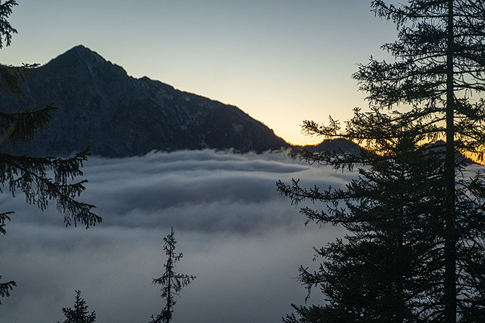
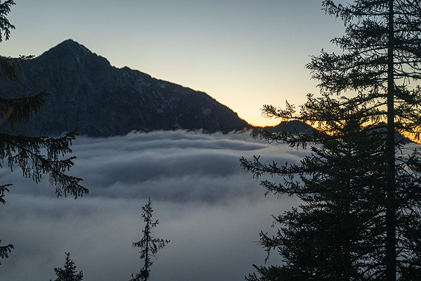

Na vrchol sme sa s Luckou dostali naozaj v hodine dvanástej. Slnko sa už dotýkalo kopcov v pozadí a nám tak zostalo posledných pár minút na vychutnanie si výhľadov na nádherne zafarbenú krajinu.
Po piatich dňoch práce a sychravého počasia sme sa zobudili do pekného slnečného rána. Pre kamoša Jozefa to bol prvý voľný "víkend" v Bavorsku a na turistiku ho netreba veľmi prehovárať. Lucka mala tiež chuť na nejaký "lite" výlet a tak sme vymysleli program, ktorý uspokojí všetkých. Kopec Jochberg bol svojou prístupnosťou a nádhernými výhľadmi skvelou voľbou. Rozhodli sme sa ísť až poobede a vychutnať si z kopca západ Slnka. Keďže sa Jochberg nachádza na samom okraji Álp, často sa stáva, že na severe od neho panuje úplne iné počasie, ako na juhu, z ktorého sme prišli my.
Bolo tomu tak aj dnes a tak sme už z diaľky nemo zízali, ako sa cez nižšie položené miesta pohoria prelievajú prívalové vlny hustej hmly. Na parkovisku pod kopcom už hmla zahalila aj nás. Bolo už dosť veľa hodín a tak sme sa zbytočne nezdržiavali a hneď sme vyrazili. Jozef nechcel riskovať, že prepasie západ a tak sa hore vydal svižnejším tempom a tak nám už za pár minút zmizol z dohľadu. Nie že by sme šli až tak pomaly, no viditeľnosť bola naozaj nízka. Tá sa ale s pribúdajúcou nadmorskou výškou zlepšovala, hmla slabla a začali sa cez ňu predierať prvé lúče svetla, ktoré ju zafarbili do všetkých odtieňov zlatej.
Netrvalo dlho a už sme stáli úplne nad úrovňou hmly. Začali sa nám naskytať prvé čiastočné výhľady. Taká malá ochutnávka, hovorili sme si. Spravili sme si zopár fotiek, pokochali sme sa, no veľmi sme sa nezdržiavali, pretože do západu Slnka už naozaj nezostávalo veľa času. Pár stovák metrov pred vrcholom sa k nám znova pripojil Jozef, ktorý hore z čakania už dosť vymrzol. Tentokrát, už naozaj v trojici, sme sa pobrali ďalej.
Takéto svetlo nikdy neomrzí
K vrcholu to bol už len kúsok, tak sme sa už neplánovali zastavovať, no jednu zastávku sme si nakoniec predsa len urobili. Medzi nás a vrchol sa postavil Kozorožec. Pre všetkých troch to bolo prvé stretnutie a týmto krásnym tvorom vo voľnej prírode. Chvíľu sme mu zízali na zadok, potom sa otočil a zízal aj on na nás. Keď ho to už prešlo, ladným krokom si to namieril do kosodreviny a už ho nebolo.
Na vrchol sme sa s Luckou dostali naozaj v hodine dvanástej. Slnko sa už dotýkalo kopcov v pozadí a nám tak zostalo posledných pár minút na vychutnanie si výhľadov na nádherne zafarbenú krajinu.
Bolo to naozaj ako na hranici dvoch svetov. Na juhu jazero Walchensee obklopené desiatkami alpských vrcholov.
A nekonečné biele more na severe.
Dalo by sa na tú krásu pozerať ešte dlho no jednu vec na fotkách nevidno. Bol ňou silný vietor, ktorý sa nám postupne dostával pod kožu a nakoniec nás
úspešne popohnal smerom k autu. Na záver ešte pridávam záznam trasy.
ZÁZNAM TRASY


 
